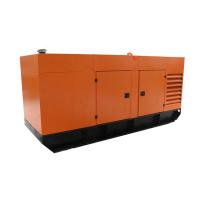
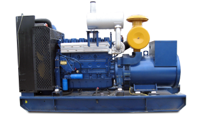
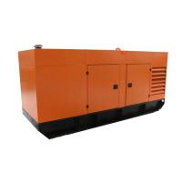
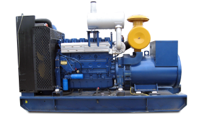
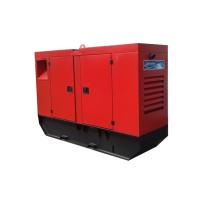
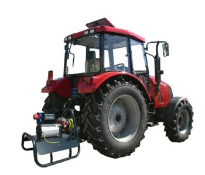
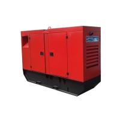
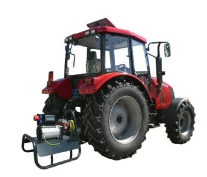

Мы даём Вам свободу и энергонезависимость!
Благодаря нашей технике Вы больше не привязаны к коммунальным источникам электроэнергии!
О нас
ООО «ПАТРИОТ Технолоджис» работает на рынке Украины с 2006 г., как надежный партнер в сфере внедрения и обслуживания энергетического оборудования.
Мы поставляем на рынок Украины электрогенерирующее и насосное оборудование проверенного временем завода-производителя ЗАО «МАЗ», Республика Беларусь.
.jpg)
Наша компания обладает эксклюзивным правом на территории Украины на поставку, ввод в эксплуатацию, обслуживание и ремонт генераторов и дизельных насосов торговой марки «БМЕ – Дизель».

На сегодняшний день наша компания производит комплексное техническое обслуживание всех поставленных в Украину дизель генераторов «БМЕ – Дизель», а также генераторов других торговых марок.

Мы поставляем на рынок Украины электрогенерирующее и насосное оборудование проверенного временем завода-производителя ЗАО «МАЗ», Республика Беларусь.
Наша компания обладает эксклюзивным правом на территории Украины на поставку, ввод в эксплуатацию, обслуживание и ремонт генераторов и дизельных насосов торговой марки «БМЕ – Дизель».

На сегодняшний день наша компания производит комплексное техническое обслуживание всех поставленных в Украину дизель генераторов «БМЕ – Дизель», а также генераторов других торговых марок.

Для клиента
Предлагаем вниманию всех заинтересованных лиц возможность купить генератор «БМЕ – Дизель». Данные дизель-генераторы разрабатываются с учетом возможности работы в качестве постоянного источника электроэнергии в условиях резкой смены режима потребления энергии. Также их можно использовать в качестве генератора для дома.

Кроме классических дизельных генераторов предлагаем уникальный продукт – генераторы с приводом от вала отбора мощности (ВОМ) трактора. Его можно использовать как навесное оборудование для трактора. Такое техническое решение в первую очередь заинтересует владельцев тракторной техники – применение генераторов с приводом от ВОМ позволит купить аналогичный по мощности генератор в два раза дешевле дизельного.

Также наших партнеров из сельско-хозяйственной отрасли заинтересует еще один продукт «БМЕ – Дизель» - дизельные насосы. Это оборудование позволяет подать воду в самые удаленные места и станет незаменимым помощником при поливе полей.
Наиболее популярные модели наших генераторов есть на складе в Минске и доступны для приобретения в течении 2ух недель.


Кроме классических дизельных генераторов предлагаем уникальный продукт – генераторы с приводом от вала отбора мощности (ВОМ) трактора. Его можно использовать как навесное оборудование для трактора. Такое техническое решение в первую очередь заинтересует владельцев тракторной техники – применение генераторов с приводом от ВОМ позволит купить аналогичный по мощности генератор в два раза дешевле дизельного.

Также наших партнеров из сельско-хозяйственной отрасли заинтересует еще один продукт «БМЕ – Дизель» - дизельные насосы. Это оборудование позволяет подать воду в самые удаленные места и станет незаменимым помощником при поливе полей.
Наиболее популярные модели наших генераторов есть на складе в Минске и доступны для приобретения в течении 2ух недель.